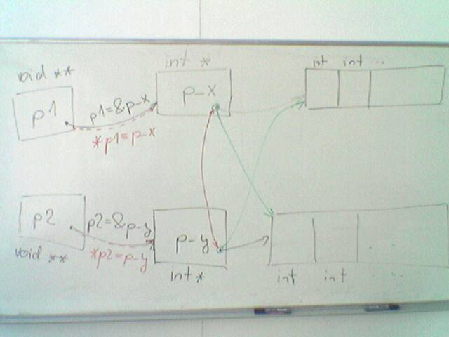

Alokace a výmìna obsahu polí
Zadání
Napi¹te funkci, která vymìní obsah (jednotlivé prvky) dvou polí, která jsou funkci pøedána jako parametry. Funkci realizujte tak, aby byla co nejrychlej¹í. Pokud je to mo¾né, realizujte ji tak, aby byla (univerzálnì) pou¾itelná pro výmìnu prvkù polí libovolného typu.
stáhnìte si (viz. sekce literatura) zdrojové moduly checker (cpp a h)
Vytvoøte projekt, ve kterém bude funkce main a modul check.cpp (do main vlo¾te check.h). Proètením úvodního komentáøe v check.h zjistìte jak je mo¾né check pou¾ít.
Ve funkci main si vytvoøte promìnné pro ulo¾ení dvou polí
typu int. Pole vytvoøte jako dynamické (alokujte prostor) pro 10
prvkù pro ka¾dé pole. První pole naplòte hodnotami 0 a¾ 9, druhé
pole hodnotami 20 a¾ 29.
Program pøelo¾te a spus»te –
pokud máte dobøe propojené moduly na check, mìla by se vám objevit
zpráva o vyu¾ití pamìti. Pokud vás checker upozorní na chybu,
opravte ji (odalokace).
Vytvoøte funkci, která vytiskne místo, kde pole le¾í a dále obsahy polí – nejdøíve prvního, potom druhého a tuto funkci zavolejte.
Nejprve v main a potom ve funkci vymìòte obsahy polí. Pro
„výmìnu“ polí pou¾ijte mechanizmus z minulého cvièení.
Nebudete vymìòovat prvky v polích, ale pouze ukazatele na tato pole
(minule se vymìòovaly hodnoty typu int (èi double), nyní bude postup
stejný, ale typem bude ukazatel).
Tímto postupem doká¾eme vymìnit
libovolnì dlouhé pole pomocí výmìny dvou ukazatelù, co¾ je podstatnì
rychlej¹í.
Nakreslete si pamì»ovou mapu.
V¹imnìte si, ¾e pøi
výmìnì prvkù polí pomocí ukazatelù není nutné pracovat s vlastními
prvky pole. Pracuje se vlastnì pouze s „adresovou èástí“
ukazatele, typ není vyu¾it.
Nyní v tomté¾ projektu zopakujte body 2 a 3 ale místo typu int pou¾ijte typ double (kód bude tedy dvakrát – pro vytvoøení a tisk pole int a double).
Zavolejte funkci pro výmìnu polí pro vytvoøené pole typu
double. Funkce bude volána pro dva rùzné typy – int a double.
Bude fungovat? Proè? V èem by mohl být problém?
Jaký typ by byl
nejlep¹í pro parametry funkce a proè? (Funkce je volána s více
(dvìma) typy, bylo by dobré pou¾ít nìjaký „univerzální“
typ. Vyberte z char, int, double, float, void).
Motivaèní obrázek pro øe¹enou úlohu:

V místì mezi P2 a P_Y (a P1 a P_X) je hranice mezi
volající a volanou funkcí
Vpravo jsou naznaèená pole, uprostøed
jsou promìnné ve kterých jsou adresy polí a naznaèené kam ukazují
pøed a po výmìnì.
Vlevo jsou promìnné ve funkci, mezi levým a
støedním sloupcem jsou naznaèeny „zmìny“ promìnných mezi
funkcí volající a volanou.
Poslední zmìna 2014-04-08